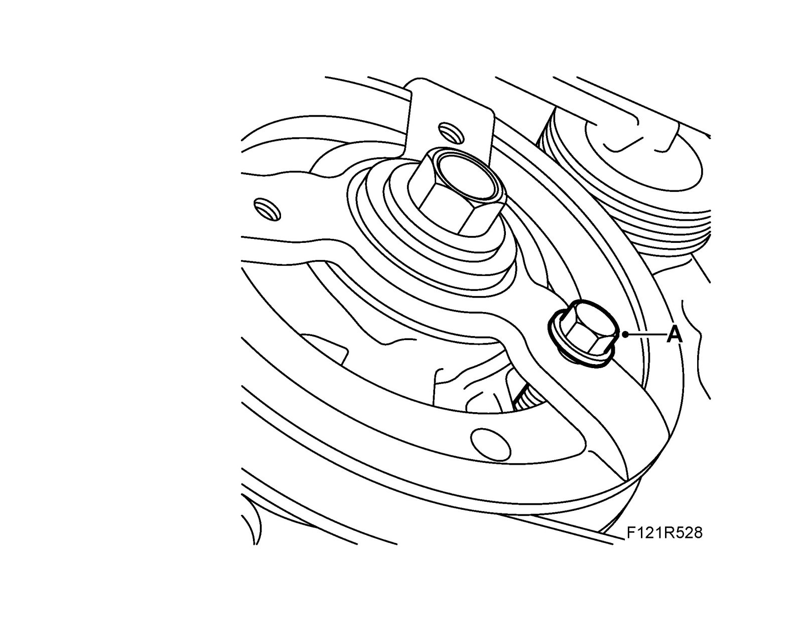
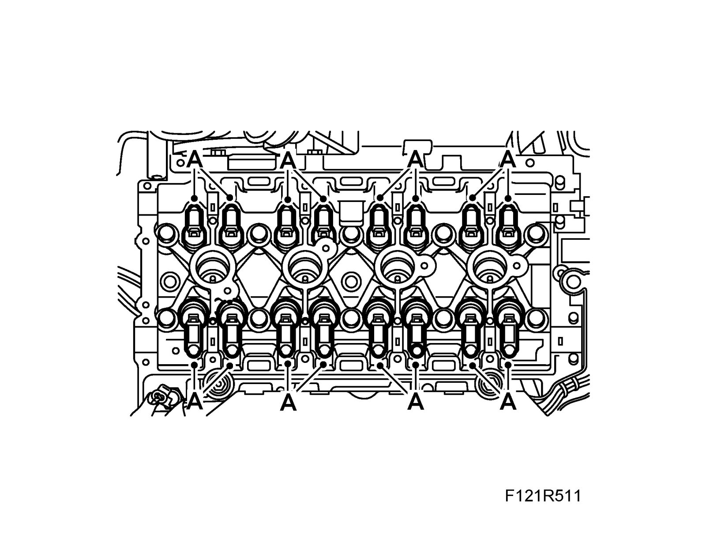
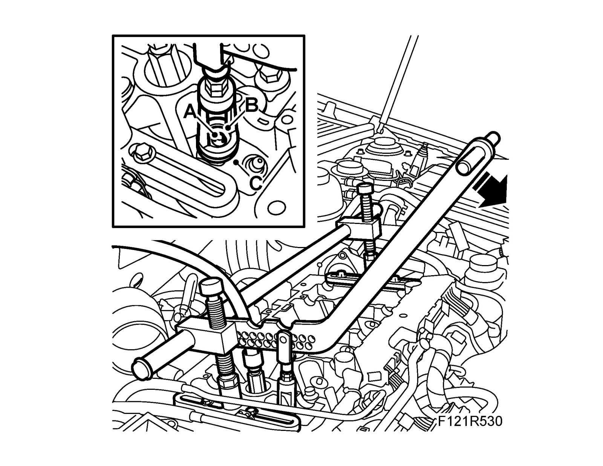
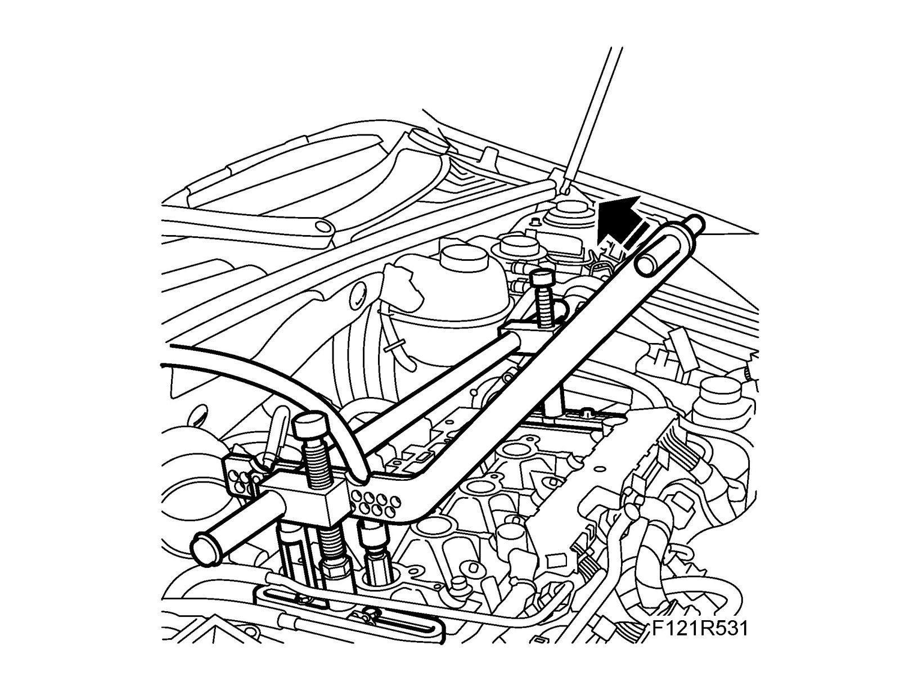
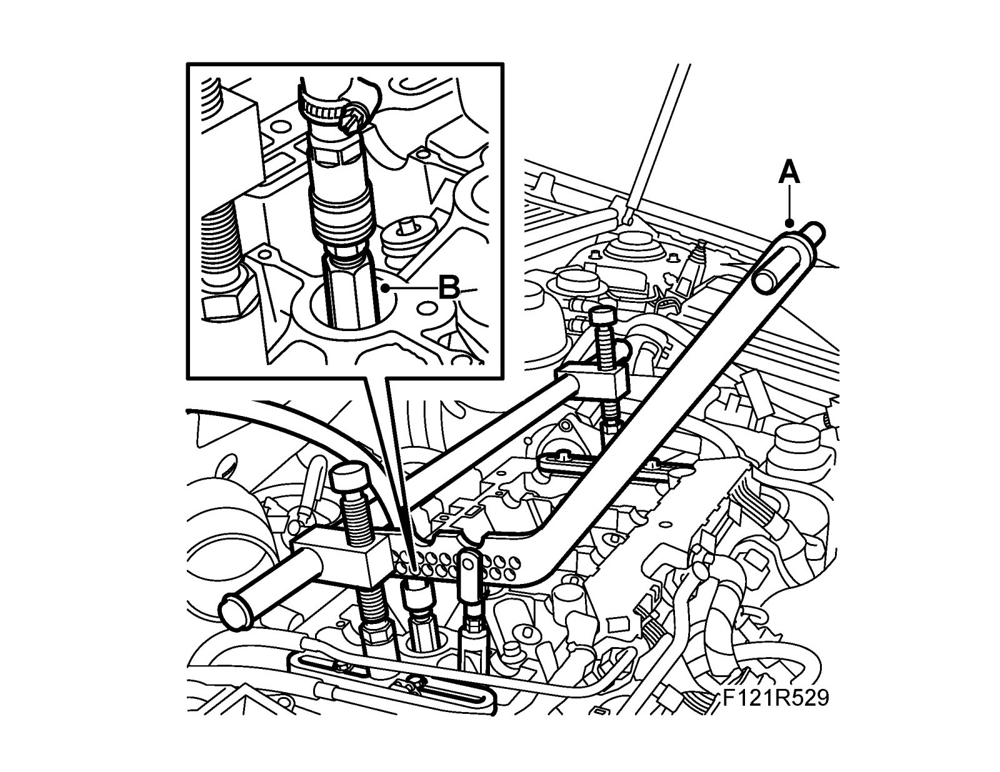

Valve Spring: Service and Repair
Valve springsTo remove
Important
Store all removed valve parts in the valve stand 83 93 787.
1. Remove the camshafts.
2. Fit an M6 bolt in the front hole of the pulley (A). Turn the pulley slightly so that the bolt slides in between the two lugs in the timing cover.

3. Remove the roller rockers (A). Store them in 83 93 787 Valve stand so they do not get mixed up.

Important
Cover all return oil ducts in the cylinder head so that the valve cone or contaminants cannot fall down into the engine.
4. Fit 83 95 246 Valve spring depressor (A). The removal end must be vertical above the valve stem.

5. Remove the spark plug and fit 83 94 173 Air nipple for spark plug hole (B). Connect compressed air and fit the piston and valves under pressure.
Important
The compressed air must not be disconnected when the valve cone is removed. Do not press on the valve stem either as counterpressure in the cylinder could reduce and the valve could fall down into the cylinder.
6. Press the tool handle down and remove the valve cone (A) with a magnet. Lift out the spring plate (B) and valve spring (C).

7. When removing valve springs on the exhaust side, fit the tool as illustrated and lift the handle upward.

To fit
1. Press the tool handle down and fit valve spring (C), spring plate (B) and cone (A) in the valve stem groove.

2. When fitting valve springs on the exhaust side, fit the tool as illustrated and lift the handle upward.

3. Disconnect compressed air and remove 83 94 173 Air nipple for spark plug hole (B). Fit the spark plug.

4. Remove the tool 83 95 246 from the cylinder head (A).
5. Fit the roller rockers (A).

6. Remove the bolt from the front hole of the pulley (A). Reset the crankshaft.

7. Fit the camshafts.